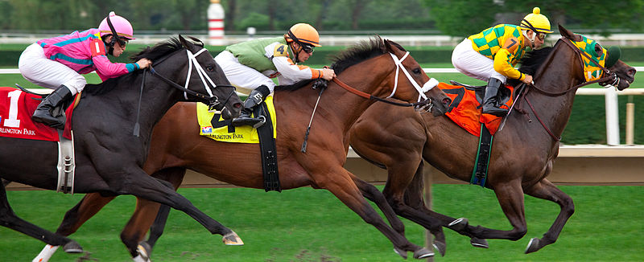
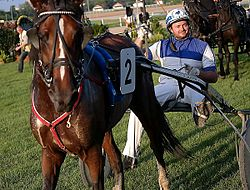

Típusai
Magyarországon a lóversenyzésnek két ága van: a galopp és az ügető. Ezeket összefoglaló néven lósportnak is nevezik. A többi lovakkal kapcsolatos sportot (díjugratás, díjlovaglás, military stb.) lovassportoknak nevezzük.
Galopp

A galopp vagyis a vágta a ló leggyorsabb haladási módja. A lovak, ha fokozzák sebességüket vágtázni kezdenek. A ló szervezetét, izomzatát, ízületeit, lábait ez a mozgás veszi a legjobban igénybe. A vágta sebessége szerint kétféle változata van, a kenter és galopp (versenyvágta) mozgás. Ez a cikk a galopp kialakulásával, történetével foglalkozik.
Ügető

A Magyar Ügetőderby (1884-től 1891-ig, mint Nagy Tenyészverseny) a szakág legrangosabb versenyeként számon tartott lóverseny, amit legelőször 1884-ben rendeztek meg.A tradicionális galopp Magyar Derby megrendezése előtt 37 évvel, az ügető szakmában a tenyészverseny kifejezést használták.